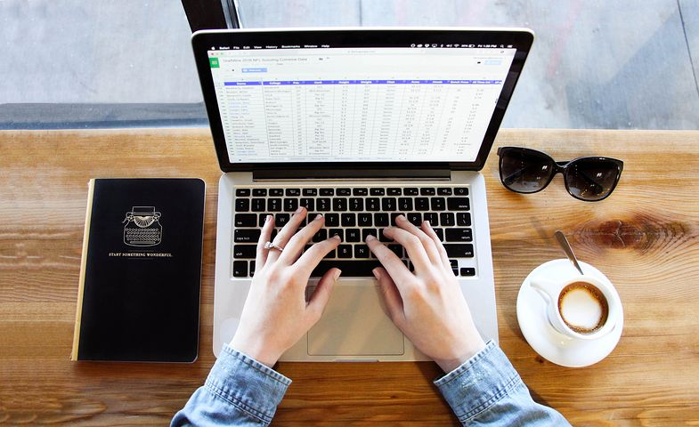

CV PAGE
SubSkill
Subskill means having the talent in another field like writing, recognition of connected speech and understanding in listening and pronunciation and intonation so i have teaching speaking subskill. students often have difficulty producing fluent speech because they have the lack of vocabulary or grammer to express what they want to express. this activity is designed to get them to apeak at length about something they are very familiar with. to start choose a topic that you know students can speak about and then let them know what it is. so i can handled the student very carefully and i have done the short period of the presentation. i have done the short period of presentation in my collage and by doing that presentation my confidence level increases.
subskill
Computer-skill
Computer skill is know as having the knowledge about the computer. i have learned the c, c++ languages in the cambridge institute,have the knowledge about the ms-word and java language. i know about the coding of the html. i learned all the coding of the c++. in this course there are about the program which help to find the even or odd number with the help of coding. it help to made the cliender of the year. this type of languages help to understant the basic knowledge of the languages. when have the some knowledge about the c,c++ than it help to make more understant ablot the java languages. c ia a general programming languages that is extremely popular and simple. it is manchine languages which is used extensively in various application. c was the basic languages to write everything from operating systems. c is the base for the programming. it is essential to have a background in computer memory mechanisms because it is an important aspect when dealing with the c programming languages. c is a very powerful programming languages which is strongly associated with the unix operating system. the languages like c++, java are developed by c. these technology is widley used in the different technology. therefore c forms a base for many other languages that are currently in use.(https://wwww.guru99.com)
Computer skill
work experience
My first teaching experience taught me a lot about what it means to be a teacher and alot about to be a teacher and alot about myself as a future educator. I always know that the coming plans are no so easy for the people,so i am glad that i was able to have this experience to prepare me for it in te future. i aslo learned that i do not have a good sense of time when i am teaching. so i now to make sure to make a sehedule of what will be done at what time.as fressman in the school of education i am so excited to get plugged into real classroom soon and get even more traning and insight on what is really is like to be teacher. all the student are very friendly while teaching the student. and student also ask the question and i eplained that question in very details. this teaching experience give me a view of what it is that i could potentially be doing a few years from now and i am more than excited to explore this amazing field that is education.i have being teaching and one and half year. though my path toward education started early on in my high school yaers. my first official teaching experience was not until this past summer. i got as a new guidance teacher at a winter and it is one of my best experience of my life. i always loved childern and they also love me. and i am so nervous on my first day of my teaching.but my first day in the classroom went better than i expected.my job as teir was to teach the math to the student. and i show my creativity while teaching to the student and all the student like my teaching style. I had enjoy my teaching experience. (https://www.bu.edu)
Work Experience
Achievement
Achievement means someone got the success in doing especially after a lot of effort. and in other hand achievement is the process of achieving something. i have achieve the price in the batementan tournament. in this game many peopele are getting particepate and among them one is me and i have done the alot of effort to win the game, there are many people who are very good in palying the that game but i am also giving them a top competition. and al last i have won that game and i got price and that is my first achievement. in this way i have got the many achievent in my life. i got the first certificate from my school when i have won the quez competation.
Achievement
copyright@dasbarsha, 2020